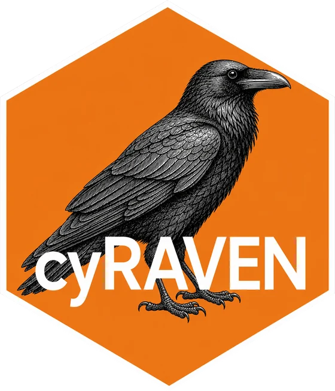

cyRAVEN
Flow cytometry files in, population frequencies, a UMAP and statistics out.
Every sample is gated separately, and the report is one file.

Quick start
You need Docker. Four commands, then open one file.
1. Get the image
2. Write the demo data: 35 FCS files, a sample sheet and a config.
3. Check the inputs. Takes seconds. It should end with no problems found.
docker run --rm \
-v "$PWD/demo:/data:ro" \
-v "$PWD/results:/results" \
cyraven:1.0.0 \
--dir /data/fcs \
--samples /data/samples.csv \
--config /data/panel.yaml \
--group-column cohort \
--reference-group "GvHD grade 1" \
--outdir /results \
--check4. Run it. A few minutes.
docker run --rm \
-v "$PWD/demo:/data:ro" \
-v "$PWD/results:/results" \
cyraven:1.0.0 \
--dir /data/fcs \
--samples /data/samples.csv \
--config /data/panel.yaml \
--group-column cohort \
--reference-group "GvHD grade 1" \
--outdir /results5. Open results/report.html. Every figure and table is in that one file.
On Windows, run these in Git Bash or WSL with MSYS_NO_PATHCONV=1 in front of each command. In PowerShell, end each continued line with a backtick instead of \, and write ${PWD} for $PWD.
How it works
FCS files · sample sheet · config
▼
1 Read the files
▼
2 Gate each sample
▼
3 Score populations
▼
4 Uncertainty and UMAP
▼
5 Compare groups
▼
report.html-
Read. Each file is opened and its channels are matched to markers. Acquisition stability over time is checked. →
acquisition_qc.csv -
Gate each sample. Leukocytes, singlets, live cells and CD45+ cells are found first. Then each marker is cut at the lowest point between its negative and positive peaks, inside that sample. →
thresholds_used.csv,gating_qc.png -
Score populations. Cells meeting each rule in your YAML are counted, for example
CD3: aboveandCD4: above. →population_frequencies.csv -
Uncertainty and UMAP. Each cut is re-derived on resampled events to see how far it moves. A UMAP is built from an equal number of cells per sample. →
threshold_uncertainty.csv,umap_overview.png -
Compare. Groups are tested with one value per sample. Populations are tested against clinical variables and followed across visits. →
group_comparison_stats.csv,clinical_association.csv
If a marker shows no gap between negative and positive cells, step 2 uses a fixed percentile instead and labels the cut quantile_fallback. The population is still reported; check it before you use the number.
What it can do
| Feature | Flag |
|---|---|
| A gate placed inside each sample | always on |
| Uncertainty for every cut and frequency | on by default |
| Several smoothing levels and gate shapes | --adaptive-gates |
| Skip a gate the data cannot support | --auto-fix-gates |
| Tests between groups | --group-column |
| Clinical scores and lab values | --clinical-columns |
| Absolute cell numbers | --total-counts |
| Every figure again per visit | --split-by-timepoint |
| Batch check, and correction |
--batch-column, --correct-batch
|
| Clustering, for unlisted populations | --explore |
| FMO controls as gate references |
fmo_for column |
| FCS files with gate columns, for FlowJo | --flowjo-export |
| Gating-ML 2.0 gate export | --export-gates |
Your own data
You write two files: a sample sheet (one row per FCS file) and a config (the populations to score). Start both from a template.
docker run --rm -v "$PWD/data:/data" \
cyraven:1.0.0 \
--dir /data/fcs --recursive \
--write-samples /data/samples.csvFill in the sheet’s patient_id and group columns, and edit the populations: section of the config. Run with --check until it reports no problems, then run without it. Get started explains both files and every option.
Before you use a number
-
Open
gating_qc.pngfirst. It draws each cut on the data it came from. A cut on the side of a peak, instead of in the gap, is visible there and in no table. -
A
quantile_fallbackcut found no gap. Look at that population before you report it. -
Frequencies are shares of CD45+ cells. One population’s share can rise because another fell, with no change in its cell number. Only
--total-countsshows a change in size. -
Tests use one value per sample, never single cells, so a longer acquisition does not inflate significance. With several samples per patient, pair them with
--paired-column patient_idand--condition-column timepoint.
Why gate each sample separately
Manual gating varies between operators. When 38 operators gated the same files, the median expanded uncertainty was 3.6%, and experience made no significant difference (Grant et al., 2021, PDA J Pharm Sci Technol 75:33). Across 320 clinical samples analysed by six technologists, the remaining spread followed the operator more than the instrument (Mead et al., 2026, Cytometry B, doi:10.1002/cyto.b.70048).
Copying one set of gate coordinates to every sample does not fix this. Samples stain with different intensity, so a fixed cut suits some and not others. cyRAVEN places each cut inside its own sample and reports how precisely that cut is determined.
Documentation
| Page | For |
|---|---|
| Get started | The two input files and every option |
| About | What each stage does, and why |
| Flow cytometry | Events, gates and channels, for newcomers |
| Advanced | Explore mode, diagnostics, every output |
| Gallery | Every figure, and how to read it |
| Limitations | What results can and cannot support |
| Reference | Every exported R function |
Everything is also in one PDF: cyRAVEN-manual.pdf.
Without Docker
Docker pins R 4.4.3, a dated CRAN snapshot and Bioconductor 3.20. Newer package versions can move gates and UMAP coordinates slightly, so results may differ a little outside it.
install.packages("BiocManager")
BiocManager::install("flowCore")
remotes::install_github("bhagesh-h/cyRAVEN")
library(cyRAVEN)
write_demo_cohort("demo")
run_cyraven(list(
dir = "demo/fcs", outdir = "results",
samples = "demo/samples.csv",
config = "demo/panel.yaml",
group_column = "cohort",
reference_group = "GvHD grade 1"))The chapters are not installed with the package, so browseVignettes() returns nothing; function help such as ?run_cyraven is installed.
Citation
citation("cyRAVEN")If you use the clustering, also cite FlowSOM (Van Gassen et al., 2015, Cytometry A 87:636). For the differential state tests, also cite diffcyt (Weber et al., 2019, Commun Biol 2:183).
How parts of this were written
Commit messages and parts of the documentation were drafted with Anthropic’s Claude through Claude Code. The code and its results are the author’s, and every number in the documentation comes from a run. If the documentation and the package disagree, please open an issue.
Licence
GPL-3. See LICENSE.